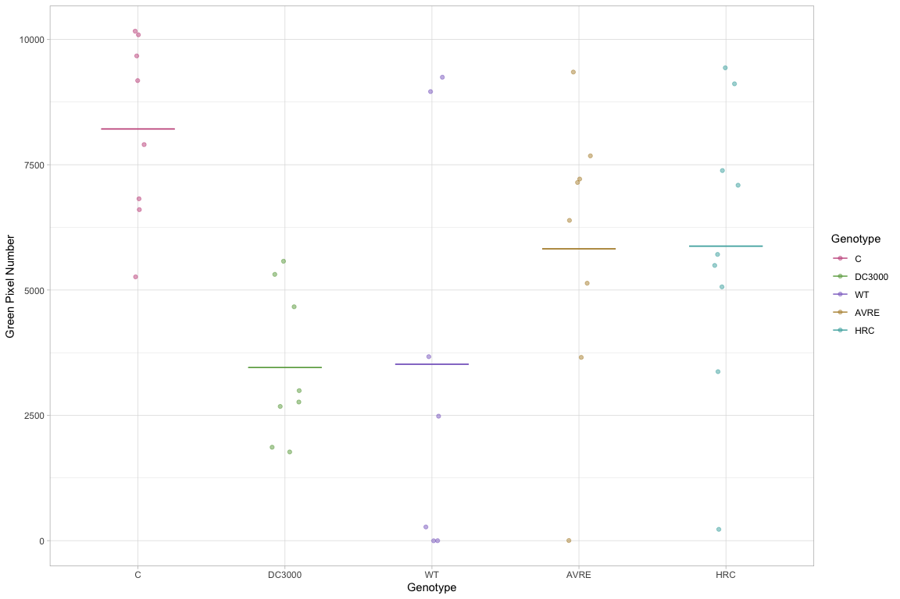
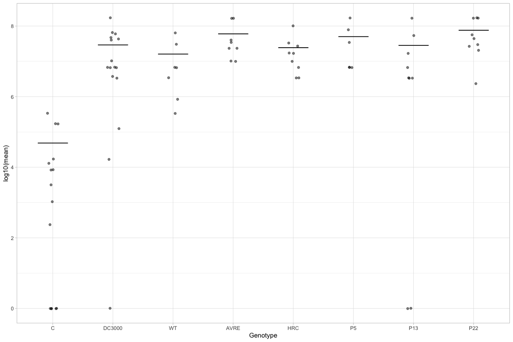

Read in map of who was where
fileUrl <- ("https://docs.google.com/spreadsheets/d/1ar1stJXBPljPWMtrY5QcABxTfU-0Wv7GUyQ6Y6AbXvI/edit#gid=0")
fileCSV <- read_sheet(ss = fileUrl)
pos_genot_map=fileCSV[,c("position","Genotype")]Read in data from green pixels and merge with pos map
green_pixels = read.table("~/work_main/abt6_projects8/Pseudomonas_mapping/data/infection_experiments/august_2019/process_pixels_all.csv", sep="\t", header=T)
green_pixels = merge(pos_genot_map, green_pixels, by.x = "position", by.y = "position")
green_pixels = subset(green_pixels, Genotype!="NA")
greenp_ww = green_pixels[green_pixels$Plate %in% c("plate1_1_uncover_23082019", "plate1_2_uncover_2382019"),]
greenp_mutant = green_pixels[green_pixels$Plate %in% c("plate2_1_uncover_2382019", "plate3_2_uncover_2382019"),]Now plot the green pixels
greenp_mutant$Genotype = as.factor(greenp_mutant$Genotype)
greenp_mutant$Genotype = factor(greenp_mutant$Genotype, levels = c("C", "DC3000", "WT", "AVRE", "HRC"))
the_means = greenp_mutant %>% group_by(Genotype) %>% dplyr::summarise(mean = mean(Green_pixels, na.rm=T), se = sd(Green_pixels, na.rm=T) / length(Green_pixels))
base = ggplot(data = the_means, aes(x=Genotype, y=mean, colour=Genotype))
p2 = base + geom_errorbar(aes(ymin=mean, ymax=mean), width=.5) +
theme_light() +
geom_jitter(data = greenp_mutant, aes(x=Genotype, y=Green_pixels), width=0.1, alpha=0.5) +
ylab("Green Pixel Number") +
scale_color_manual(values = mycolors)
p2
Let’s do a comparison between the avrE and hrc with WT
greenp_mutant_WT = subset(greenp_mutant, Genotype=="WT")
greenp_mutant_AVRE = subset(greenp_mutant, Genotype=="AVRE")
greenp_mutant_hrc = subset(greenp_mutant, Genotype=="HRC")
wilcox.test(greenp_mutant_WT$Green_pixels, greenp_mutant_hrc$Green_pixels)##
## Wilcoxon rank sum test with continuity correction
##
## data: greenp_mutant_WT$Green_pixels and greenp_mutant_hrc$Green_pixels
## W = 19, p-value = 0.2037
## alternative hypothesis: true location shift is not equal to 0wilcox.test(greenp_mutant_WT$Green_pixels, greenp_mutant_AVRE$Green_pixels)##
## Wilcoxon rank sum test with continuity correction
##
## data: greenp_mutant_WT$Green_pixels and greenp_mutant_AVRE$Green_pixels
## W = 19, p-value = 0.3235
## alternative hypothesis: true location shift is not equal to 0Now let’s look at colonies from 8.26.2019
cfu = fileCSV[,c("Genotype", "Base_calc", "dil1_calc", "dil2_calc", "dil3_calc", "dil4_calc")]
real_cfu = cfu %>% rowwise() %>% dplyr::summarise(max = max(Base_calc, dil1_calc, dil2_calc, dil3_calc, dil4_calc, na.rm = TRUE))
cfu$cfu_calc = real_cfu$max
cfu$Genotype = factor(cfu$Genotype, levels = c("C", "DC3000", "WT", "AVRE", "HRC", "P5", "P13", "P22"))
cfu = subset(cfu, Genotype!="NA")
cfu_means = cfu %>% group_by(Genotype) %>% dplyr::summarise(mean = mean(cfu_calc, na.rm=T), se = sd(cfu_calc, na.rm=T) / length(cfu_calc))
cfu_alone = ggplot(data = cfu_means, aes(x=Genotype, y=log10(mean))) +
geom_errorbar(aes(ymin=log10(mean), ymax=log10(mean), width=.5)) +
theme_light() +
geom_jitter(data = cfu, aes(x=Genotype, y=log10(cfu_calc+1)), width=0.1, alpha=0.5) +
scale_color_manual(values = mycolors)
cfu_alone